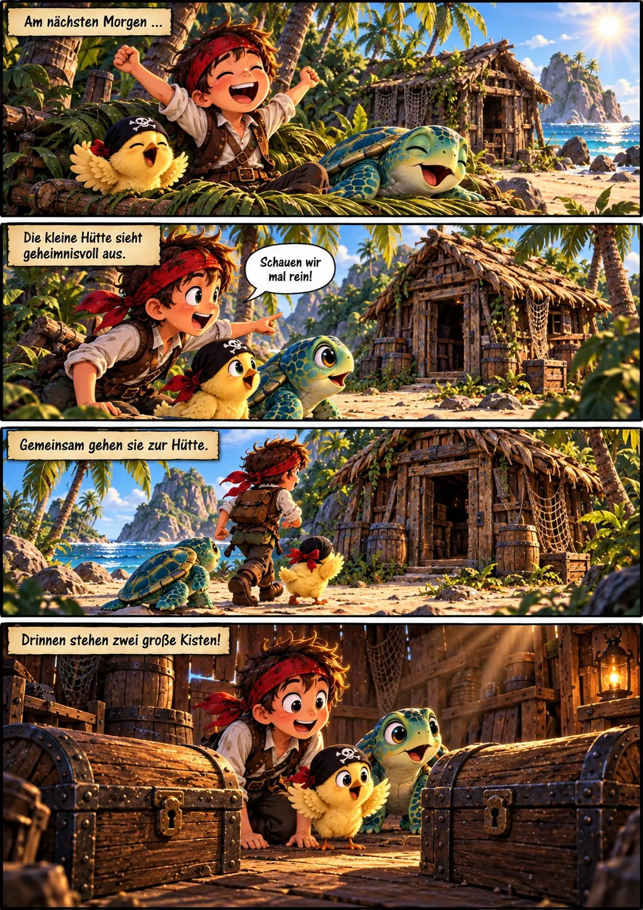
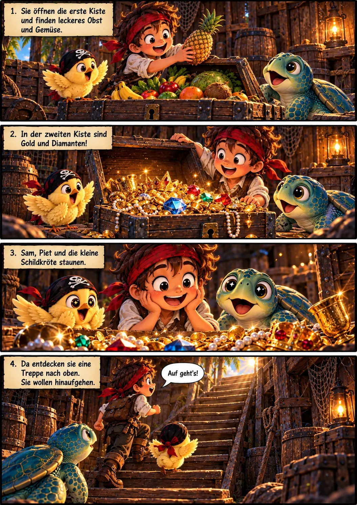
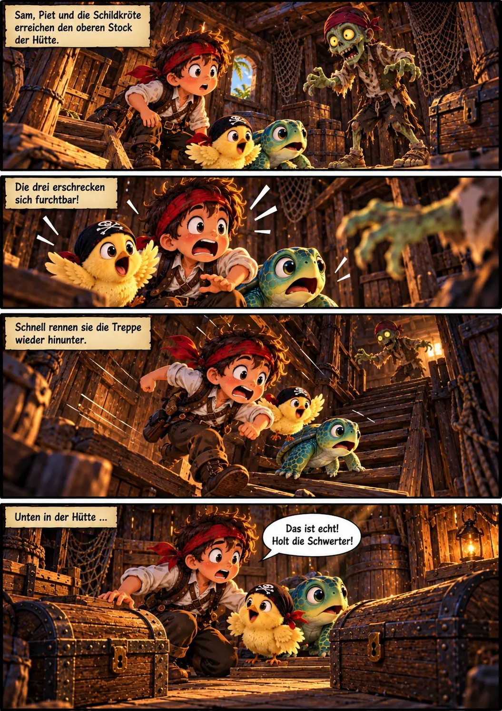
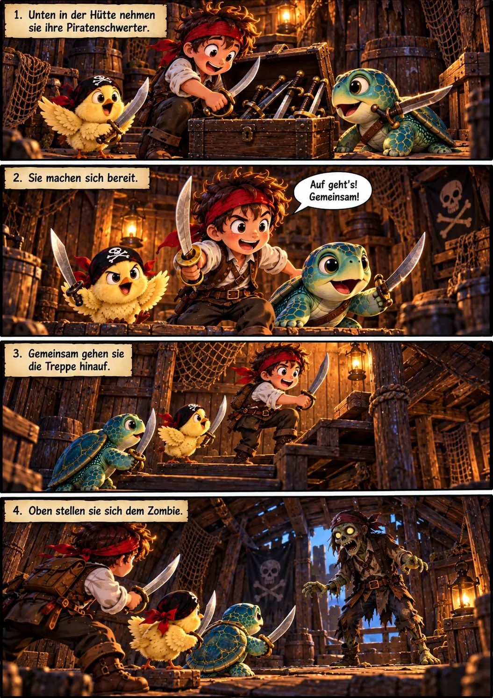
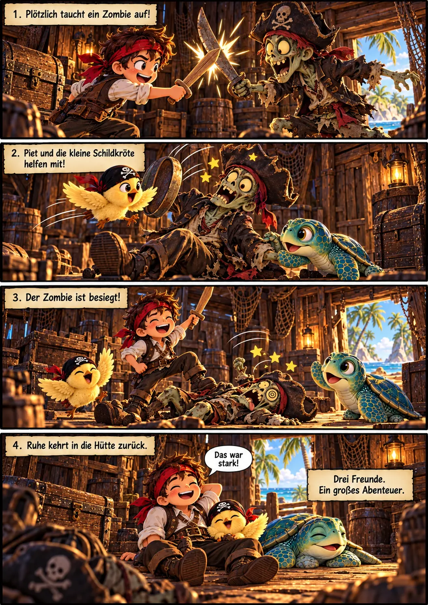
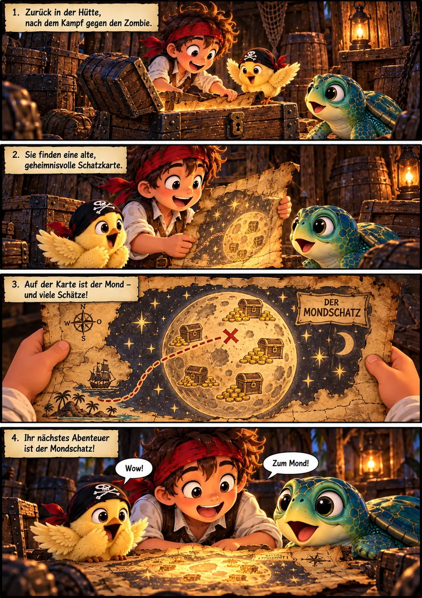
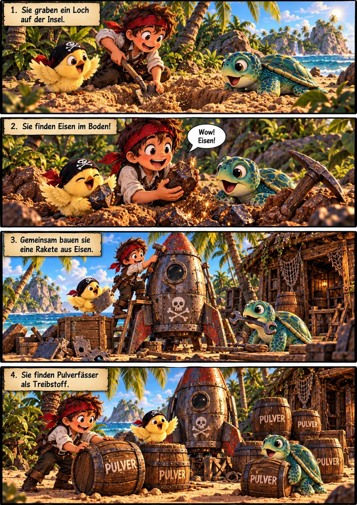
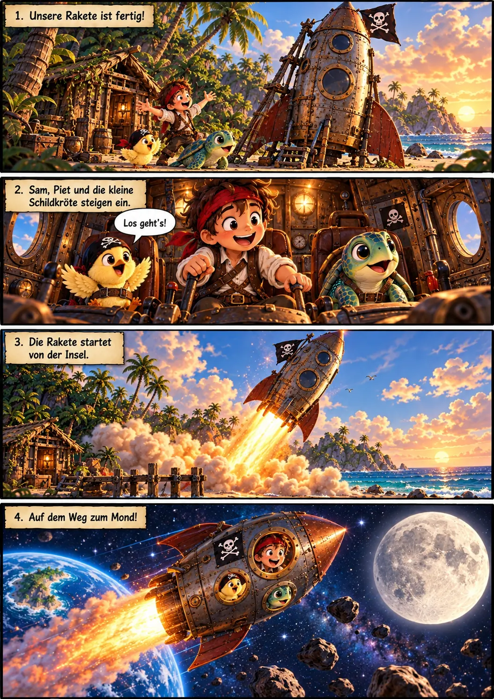
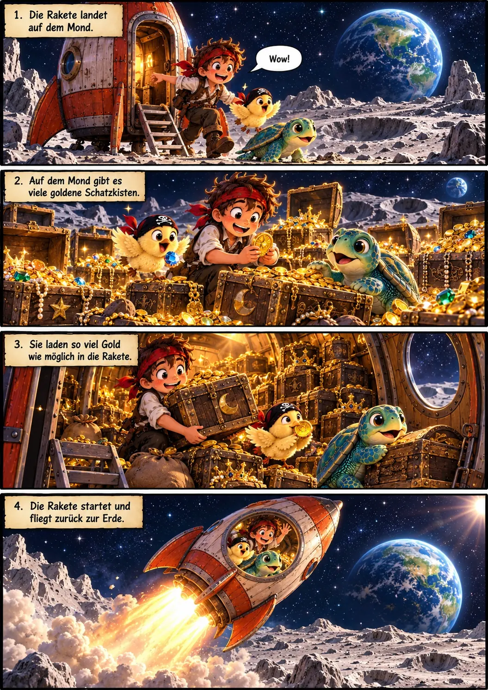
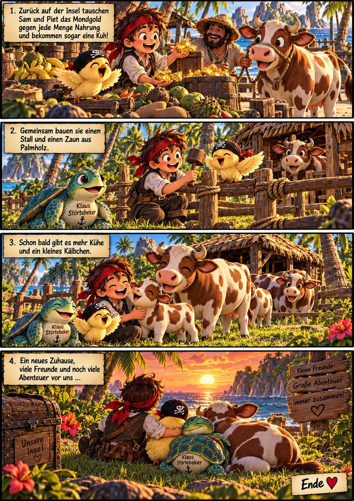

Sams frühe Comic-Entwürfe
Die Hütte, der Zombie und der Mondschatz
Illustrierte Fassung
Sam und Piet finden in einer Truhe eine Karte. Ihre Suche führt aus der Hütte bis zum Mond. Hier ist die Geschichte noch einmal in zehn farbigen Bildseiten erzählt.
Die Zeichnungen und Sprechblasen sind im deutschen Original zu sehen. Tippe auf eine Seite, um das Bild in voller Größe zu öffnen.









